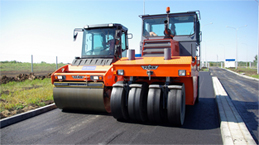
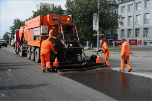
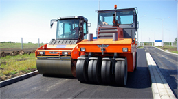
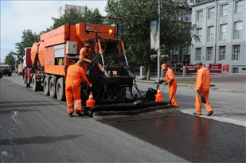

Публикации в СМИ
В облсобрании обсудили возможность реконструкции опасного участка трассы Северодвинск — Архангельск
На сессии областного Собрания депутатов 21 сентября будет вынесено обращение о переводе аварийного участка в дорогу первой категории. Тогда трассу будет необходимо расширить минимум до четырёх полос и поставить отбойники не только по обочинам, но и один разделительный отбойник посередине.
Обращение о необходимости реконструкции направят Росавтодору и министерству транспорта, сообщает «Северная неделя». На сессии областного Собрания депутатов 21 сентября будет вынесено обращение о переводе аварийного участка в дорогу первой категории. Тогда трассу будет необходимо расширить минимум до четырёх полос и поставить отбойники не только по обочинам, но и один разделительный отбойник посередине.
Обращение о необходимости реконструкции направят Росавтодору и министерству транспорта, сообщает «Северная неделя».
 
На сессии областного Собрания депутатов 21 сентября будет вынесено обращение о переводе аварийного участка в дорогу первой категории. Тогда трассу будет необходимо расширить минимум до четырёх полос и поставить отбойники не только по обочинам, но и один разделительный отбойник посередине.
Вам может быть интересно
Вопрос реконструкции на трассе Северодвинск — Архангельск обсудили на совещании депутаты областного собрания, Росавтодор, ГИБДД и правительство Архангельской области.
Вопрос реконструкции на трассе Северодвинск — Архангельск обсудили на совещании депутаты областного собрания, Росавтодор, ГИБДД и правительство Архангельской области.
Вопрос реконструкции на трассе Северодвинск — Архангельск обсудили на совещании депутаты областного собрания, Росавтодор, ГИБДД и правительство Архангельской области.